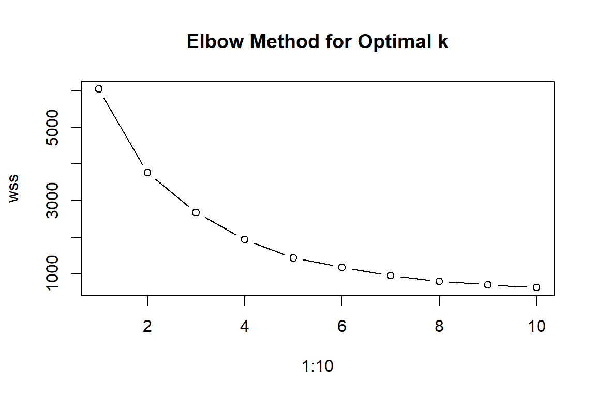
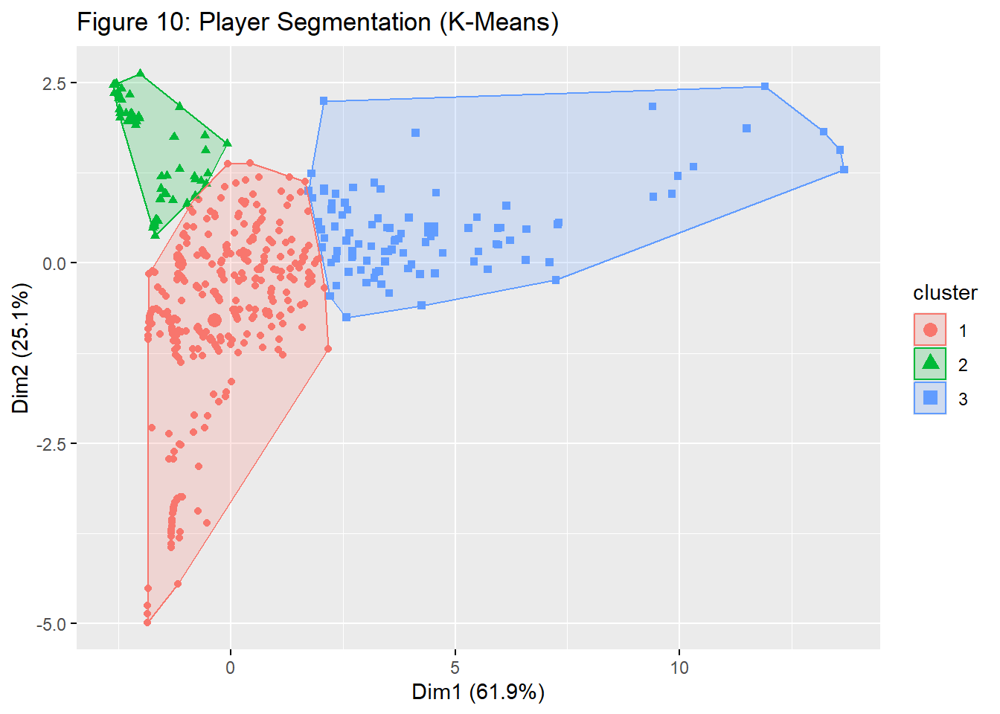
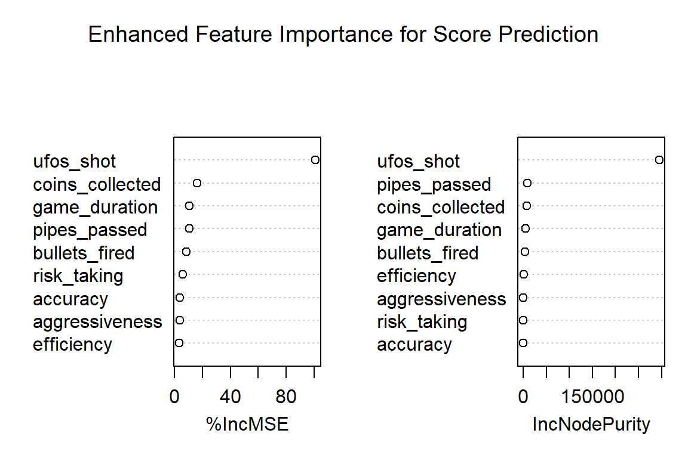
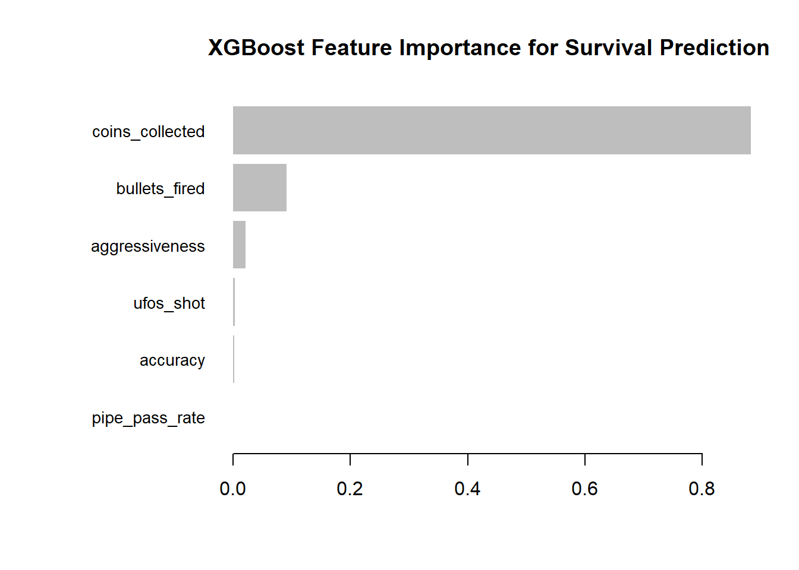
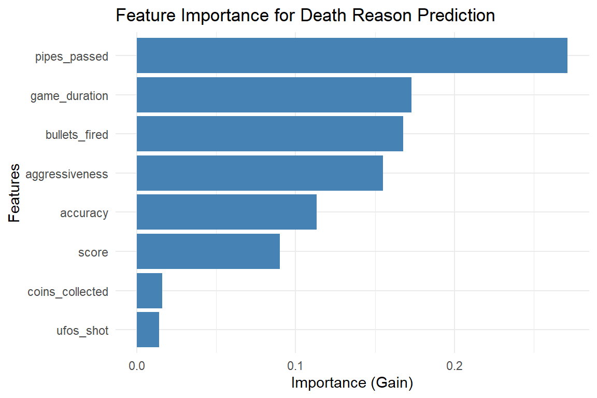

Game Analytics: From Exploratory Data Analysis to Predictive Modeling
Author
Hoang Son Lai
Published
November 17, 2025
Introduction
The modern gaming landscape is fiercely competitive, where player retention and engagement are the ultimate currencies. Success is no longer determined solely by creative design and immersive gameplay but increasingly by the ability to understand and adapt to player behavior. This project, “Game Analytics: From Exploratory Data Analysis to Predictive Modeling,” demonstrates this data-driven paradigm by conducting a comprehensive analysis of Flappy Plane Adventure, a dynamic side-scrolling shooter.
Leveraging a focused dataset of 606 game sessions, this study moves beyond traditional descriptive statistics to uncover the deep-seated patterns that govern player success and failure. The analysis begins with a thorough Exploratory Data Analysis (EDA), visualizing performance distributions, identifying the most common obstacles (pipes, ground, ceiling, and enemy bullets), and engineering advanced behavioral features such as aggressiveness, efficiency, and risk-taking to quantify distinct playstyles.
To ensure robust evaluation despite the limited dataset, stratified random splitting and 5-fold cross-validation are employed to prevent overfitting while preserving class distributions, particularly for rare death reasons. This methodological foundation enables two complementary analytical approaches:
Unsupervised Learning (Segmentation): Principal Component Analysis (PCA) and K-Means clustering are applied to the full dataset prior to any split, revealing three distinct player personas: Novices, Average Players, and Experts.
Supervised Predictive Modeling: Multiple algorithms (Random Forest and XGBoost) are developed and compared to address three business-critical tasks:
Score Regression – Predicting final scores based on gameplay behavior
Survival Prediction – Forecasting player survival beyond the 30-second expert threshold
Death Reason Prediction – Anticipating the specific cause of player death through multiclass classification
Ultimately, this report transcends a mere technical exercise. Each model and visualization is meticulously interpreted to generate actionable, evidence-based recommendations for game balancing, targeted player engagement, and strategic monetization.
1. Data Overview & Processing
The data preparation stage begins by loading the raw game session CSV. Missing or problematic values are handled (for example game_duration is set to 0 where missing), and several derived metrics are computed: score_per_second (score divided by duration) and accuracy (UFOs shot divided by bullets fired).
Code
# Load and clean the datagame_data <-read.csv("data/game_sessions.csv", stringsAsFactors =FALSE)# Data cleaning and preprocessinggame_data_clean <- game_data %>%mutate(death_reason =as.factor(death_reason),# Handle missing end_timegame_duration =ifelse(is.na(game_duration), 0, game_duration),# Create performance metricsscore_per_second =ifelse(game_duration >0, score / game_duration, 0),accuracy =ifelse(bullets_fired >0, ufos_shot / bullets_fired, 0) ) %>%filter(!is.na(start_time))
variable_description <-tibble(Variable =c("id","start_time","end_time","score","coins_collected","ufos_shot","bullets_fired","death_reason","game_duration","pipes_passed","score_per_second","accuracy" ),Description =c("Unique session identifier","Timestamp when the game session started","Timestamp when the game session ended","Final score achieved in the session. Score = coins_collected + (3 × ufos_shot)","Number of coins collected by the player","Number of UFO enemies shot","Total number of bullets fired","Cause of death (collision type / hazard)","Total session duration in seconds","Number of pipes the player successfully passed","Score normalized by session duration (score ÷ game_duration)","Shooting accuracy (ufos_shot ÷ bullets_fired)" ),Type =c("Character","Datetime","Datetime","Integer","Integer","Integer","Integer","Categorical","Numeric","Integer","Numeric","Numeric" ))variable_description %>%gt() %>%tab_header(title =md("**Variable Description - Plane Game Analytics**") ) %>%cols_width( Variable ~px(160), Description ~px(420), Type ~px(120) ) %>%tab_style(style =cell_text(weight ="bold"),locations =cells_column_labels() )
Table 1
Variable Description - Plane Game Analytics
Variable
Description
Type
id
Unique session identifier
Character
start_time
Timestamp when the game session started
Datetime
end_time
Timestamp when the game session ended
Datetime
score
Final score achieved in the session. Score = coins_collected + (3 × ufos_shot)
Integer
coins_collected
Number of coins collected by the player
Integer
ufos_shot
Number of UFO enemies shot
Integer
bullets_fired
Total number of bullets fired
Integer
death_reason
Cause of death (collision type / hazard)
Categorical
game_duration
Total session duration in seconds
Numeric
pipes_passed
Number of pipes the player successfully passed
Integer
score_per_second
Score normalized by session duration (score ÷ game_duration)
Exploratory Data Analysis (EDA) is the process of visually and statistically examining the dataset to uncover patterns. This section delves deep into the player data to understand core behaviors and outcomes. It begins with an overview of the distribution of key performance metrics, then investigates the most common reasons for game failure. Finally, it explores the relationships and correlations between different variables to understand how they influence one another.
Figure 1: Distribution of Game Performance Metrics
Figure 1 shows that the distributions for Score, Game Duration, Coins Collected, and Ufos Shot are all strongly right-skewed. This indicates that the vast majority of game sessions are short and result in low scores, which is a common characteristic of challenging, skill-based games. Most players fail early, while only a few achieve high scores and long playtimes. The Accuracy metric shows a more spread-out distribution but is still concentrated towards the lower values.
Figure 2 clearly shows that colliding with a “Pipe” is overwhelmingly the most common reason for a game to end. The second most frequent cause is hitting the “Ground”.
Figure 3: Correlation Matrix for Key Performance Metrics
Figure 3 presents a heatmap illustrating the correlations between key performance metrics. The lighter shades of green indicate a strong positive relationship. As expected, score is highly correlated with its core components: game_duration, coins_collected, ufos_shot, and pipes_passed. This confirms that the game’s internal scoring logic is sound - players who survive longer and engage with game elements successfully achieve higher scores. An equally important insight comes from the accuracy variable, which shows dark, weak correlations with nearly all other metrics. This suggests that shooting accuracy is an independent skill that is not strongly tied to how long a player survives or how many points they accumulate through other means.
2.2 Death Reason Deep-Dive
Code
# Survival Timeline by Death Reasonformat_bin <-function(x) { x <-gsub("\\(", "", x) x <-gsub("\\]", "", x) x <-gsub("\\[", "", x) x <-gsub("\\)", "", x) x <-gsub(",", "-", x) x}game_data_binned <- game_data_clean %>%mutate(duration_bin =cut(game_duration,breaks =seq(0, 140, by =5),include.lowest =TRUE)) %>%filter(!is.na(duration_bin)) %>%mutate(duration_label =format_bin(as.character(duration_bin))) %>%count(duration_label, death_reason, name ="count")duration_levels <-format_bin(as.character(levels(cut(seq(0, 100, by =5),breaks =seq(0, 140, by =5),include.lowest =TRUE))))game_data_binned$duration_label <-factor(game_data_binned$duration_label,levels = duration_levels)timeline_plot <-ggplot( game_data_binned,aes(x = duration_label,y = count,color = death_reason,group = death_reason,text =paste0("<b>Death Reason:</b> ", death_reason, "<br>","<b>Duration:</b> ", duration_label, " sec<br>","<b>Count:</b> ", count ) )) +geom_line(size =0.7) +geom_point(size =1.5) +labs(title ="Survival Timeline by Death Reason",x ="Game Duration (seconds)",y ="Number of Deaths",color ="Death Reason" ) +theme_minimal() +theme(axis.text.x =element_text(angle =45, hjust =1, margin =margin(t =5)),axis.text.y =element_text(margin =margin(r =5)) )ggplotly(timeline_plot, tooltip ="text") %>%layout(title =list(text ="<b>Survival Timeline by Death Reason</b>", x =0.5, xanchor ="center",font =list(size =17) ),legend =list(orientation ="h",x =0.5,xanchor ="center",y =-0.25,yanchor ="top" ),xaxis =list(title_standoff =20 ),yaxis =list(title_standoff =20 ),margin =list(b =160) )
Figure 4: Survival Timeline by Death Reason
Figure 4 provides a dynamic view of how different death reasons occur over time. The “Ground” and “Pipe” deaths are most frequent in the very early stages of the game (0-10 seconds), indicating these are the first major hurdles for new players. In contrast, deaths from “Enemy Bullet” become more prominent as the game duration increases, suggesting that enemies pose a greater threat to more experienced players who have mastered the basic pipe navigation.
Code
# Distribution of score by death_reasonstats <- game_data_clean %>%group_by(death_reason) %>%summarise(count =n(),mean =mean(score),min =min(score),q1 =quantile(score, 0.25),median=median(score),q3 =quantile(score, 0.75),max =max(score) )df <-left_join(game_data_clean, stats, by ="death_reason")p <-plot_ly()unique_reasons <-unique(df$death_reason)for (dr in unique_reasons) { dsub <- df %>%filter(death_reason == dr) cd <-as.matrix(dsub[, c("count","mean","min","q1","median","q3","max")]) p <-add_trace( p,data = dsub,x =~death_reason,y =~score,type ="violin",name = dr,box =list(visible =TRUE),meanline =list(visible =TRUE),customdata = cd,hovertemplate =paste("<b>Death reason:</b> ", dr, "<br>","<b>Score:</b> %{y}<br><br>","<b>Count:</b> %{customdata[0]}<br>","<b>Mean:</b> %{customdata[1]:.2f}<br>","<b>Min:</b> %{customdata[2]}<br>","<b>Q1:</b> %{customdata[3]}<br>","<b>Median:</b> %{customdata[4]}<br>","<b>Q3:</b> %{customdata[5]}<br>","<b>Max:</b> %{customdata[6]}<extra></extra>" ) )} p %>%layout(title ="Score Distribution by Death Reason",xaxis =list(title ="Death Reason"),yaxis =list(title ="Score"))
Figure 5: Score Distribution by Death Reason
Figure 5 provides a powerful comparison of player performance at the moment of failure, revealing a clear hierarchy of challenges. The distributions show that not all deaths are equal in terms of the skill level they represent:
Novice Failures: Dying by hitting the ground is associated with the lowest possible scores, with the distribution almost entirely concentrated at zero. This represents an immediate failure to grasp the basic flight mechanic. Similarly, ceiling collisions happen at very low scores.
Advanced Challenges: In stark contrast, deaths caused by enemy_bullet and ufo_collision are associated with significantly higher median scores. The box plots for these two categories are clearly elevated, indicating that only players who have already survived the initial obstacles and achieved a high score even encounter these threats. Dying to an enemy is a hallmark of a high-performing player pushing the limits of their skill.
The Universal Obstacle: The distribution for pipe collisions is unique. It has a low median score, confirming it’s a frequent cause of failure for less experienced players. However, its long upper tail, extending to the maximum score, shows that even the most expert players are not immune, making pipes the universal challenge that affects players at all skill levels.
Code
# Expected Value of Score Lost per Death Typeev_loss <- game_data_clean %>%group_by(death_reason) %>%rename(`Death reason`= death_reason) %>%summarise(`Mean score`=mean(score),`Median score`=median(score),`Count of deaths`=n(),.groups ='drop' ) %>%arrange(desc(`Mean score`))ev_loss %>%kable()
Table 4: Expected Value of Score per Death Reason
Death reason
Mean score
Median score
Count of deaths
ufo_collision
48.500000
37.5
10
enemy_bullet
41.512500
32.0
80
pipe
19.930121
12.0
415
ceiling
10.000000
3.0
11
ground
2.622222
0.0
90
Table 4 provides a clear statistical summary of the skill level associated with each cause of failure. The data reveals a stark contrast between advanced threats and novice hurdles: deaths from ufo_collision (mean score: 48.5) and enemy_bullet (mean score: 41.5) happen to high-performing players, while failing by hitting the ground (mean score: 2.6, median: 0.0) is the definitive mark of a beginner. Positioned between these, pipe collisions represent the primary mid-game obstacle, being the most frequent cause of death (415 instances) with a moderate mean score of 19.9.
2.3 Behavioral Feature Engineering
To capture nuanced player strategies, I engineered eight behavioural features, including aggressiveness (bullets fired per second), efficiency (score per second), risk_taking (UFOs shot per pipe passed), and various rate-based metrics. These features transform raw action counts into meaningful behavioural patterns that more accurately represent player decision-making.
Figure 6 provides a detailed look at how different player strategies relate to one another. The values and colors (deep blue for strong positive correlation, white for no correlation, red for negative correlation) reveal the core mechanics of successful play:
The “Winning” Strategy is High-Risk, High-Reward: The strongest correlations exist between efficiency, risk_taking, and ufo_rate, with correlation values ranging from 0.88 to 0.96. Specifically, efficiency correlates at 0.88 with risk_taking and 0.96 with ufo_rate. This is a critical insight: players who are the most efficient (highest score per second) are precisely those who take risks to engage UFOs. The game heavily rewards an active, combat-oriented playstyle over a passive, purely survival-focused one.
Accuracy is Moderately Related to Efficiency, Not Aggressiveness: There is a weak negative correlation (-0.12) between aggressiveness and accuracy, indicating that firing more frequently does not substantially reduce shooting accuracy. More importantly, accuracy shows a moderate positive correlation (0.62) with efficiency, suggesting that while accuracy matters for overall performance, it is an independent skill that skilled players can maintain even at high firing rates. Unskilled players remain inaccurate regardless of how often they shoot.
Strategic Trade-offs are Negligible: The correlation between coin_rate and aggressiveness is -0.19, which is relatively weak. This indicates there is no significant trade-off between focusing on shooting and focusing on collecting coins; skilled players appear to do both effectively. In contrast, coin_rate shows a stronger positive correlation with pipe_pass_rate (0.68), confirming that players who successfully navigate more pipes naturally collect more coins.
Overall, this matrix clearly demonstrates that success in the game is not just about survival, but about efficient, risk-taking engagement with enemies.
2.4. Session Progression Analysis
This section analyzes the dynamics within a game session, focusing on how performance metrics evolve over time and in relation to each other. Instead of just looking at final outcomes, these plots examine the journey. The goal is to understand the relationship between survival time and score accumulation, as well as the efficiency of player actions like shooting.
Code
# (A) Score vs Duration with trendlinescore_duration_plot <-ggplot(game_data_enhanced, aes(x = game_duration, y = score)) +geom_point(alpha =0.6, color ="#1f77b4") +geom_smooth(method ="loess", color ="#ff7f0e", se =TRUE) +labs(title ="Score vs Game Duration with Trendline",x ="Game Duration (seconds)",y ="Score") +theme_minimal()ggplotly(score_duration_plot)
Figure 7: Score vs Game Duration with Trendline
Code
# (B) Bullets vs UFO Shot efficiency_plot <-ggplot(game_data_enhanced,aes(x = bullets_fired, y = ufos_shot, color = skill_tier)) +geom_point(alpha =0.7) +geom_smooth(method ="lm", se =FALSE) +labs(title ="Bullets Fired vs UFOs Shot",x ="Bullets Fired", y ="UFOs Shot",color ="Skill Tier (by Score)") +theme_minimal()ggplotly(efficiency_plot)
Figure 8: Bullets Fired vs UFOs Shot
Figure 7 reveals a strong, positive, and linear relationship between how long a player survives (game_duration) and their final score. The upward curve of the trendline indicates an accelerating return: the longer a player survives, the more rapidly their score increases per second. This suggests that skilled players who survive longer are not just accumulating points over more time, but are also becoming more effective at scoring as they encounter more opportunities (UFOs, coins). Furthermore, the widening “cone” shape of the data points and the broadening confidence interval show that while survival is a necessary condition for a high score, there is a much greater variance in scoring ability among long-lasting players
Figure 8 provides a powerful visualization of shooting efficiency, segmented by Skill Tier. The key insight lies in the slope of the trendlines for each player group:
High-Skill Tiers (e.g., Pink: 50+ Score): The trendline for the most skilled players is extremely steep. This demonstrates a very high efficiency: a small increase in bullets fired results in a large increase in UFOs shot.
Low-Skill Tiers (e.g., Red: 0-4 Score): The trendlines for the least skilled players are nearly flat. They may fire a moderate number of bullets, but they achieve almost no successful hits. This visually separates raw activity (firing bullets) from effective outcomes (hitting targets).
In essence, the chart proves that simply being aggressive is not enough; success is defined by the efficiency of that aggression, a trait clearly demonstrated by the higher skill tiers.
3. Segmentation (Unsupervised Learning)
This section uses unsupervised learning to discover natural groupings or “personas” among players based on their in-game behavior. Unlike supervised learning which requires labeled data, segmentation is performed on the full dataset (N=607) prior to any train/test split. This ensures cluster definitions capture the complete range of player behaviors and allows consistent interpretation across all subsequent analyses.
3.1 Principal Component Analysis (PCA)
Before clustering, PCA is applied to understand the underlying structure of player behavior and verify that meaningful groupings exist in the data.
Code
# Features for PCA pca_features <- game_data_enhanced %>%select(score, game_duration, coins_collected, bullets_fired, ufos_shot, pipes_passed, aggressiveness, efficiency, accuracy, risk_taking)# Perform PCAset.seed(123)pca_result <-prcomp(pca_features, scale. =TRUE)# Summary of variance explainedpca_var <-summary(pca_result)$importance %>%t() %>%as.data.frame() %>% tibble::rownames_to_column(var ="PC")kable(pca_var, caption ="Variance Explained by Each Principal Component")
Variance Explained by Each Principal Component
PC
Standard deviation
Proportion of Variance
Cumulative Proportion
PC1
2.4889531
0.61949
0.61949
PC2
1.5834466
0.25073
0.87022
PC3
0.9515115
0.09054
0.96076
PC4
0.4366132
0.01906
0.97982
PC5
0.2841194
0.00807
0.98789
PC6
0.2694883
0.00726
0.99515
PC7
0.1754712
0.00308
0.99823
PC8
0.1245227
0.00155
0.99978
PC9
0.0464777
0.00022
1.00000
PC10
0.0000000
0.00000
1.00000
The first two principal components capture 87% of total variance in player behavior.
The PCA biplot above visualizes both variables (arrows) and observations (points). The direction and length of each arrow indicate how much that variable contributes to the two principal components.
PC1 - “Progression & Skill” (61.9%): The variables directly associated with successful outcomes - score, game_duration, pipes_passed, coins_collected, ufos_shot, and bullets_fired - have large, positive loadings on the x-axis. This means that a player’s position along the horizontal axis is a direct and powerful measure of their overall skill and progression within a single game session. Moving from left to right signifies a transition from a low-performing session to a high-performing one.
PC2 - “Playstyle: Passive Survival vs. Active Combat” (25.1%):
The variables with positive loadings (pointing upwards) are primarily the raw accumulation metrics: game_duration, coins_collected, and pipes_passed. These represent a playstyle focused on longevity and steady progress. A high score on this axis indicates a “Survival” approach, where the main goal is to dodge obstacles and last as long as possible.
The variables with negative loadings (pointing downwards) are the key behavioral ratios: aggressiveness, risk_taking, efficiency, and,accuracy. These metrics measure the intensity and effectiveness of a player’s actions. A low score on this axis indicates an “Active Combat” or “High-Efficiency” playstyle, where the player is actively engaging with enemies, taking risks to shoot UFOs, and maximizing their score-per-second.
3.2 K-Means Clustering
With the clusterable structure confirmed by PCA, K-Means clustering is applied to identify distinct player personas.
Code
# Features for clustering (full dataset)features_to_cluster <- game_data_enhanced %>%select(score, game_duration, coins_collected, bullets_fired, ufos_shot, pipes_passed, aggressiveness, efficiency, accuracy, risk_taking)# Scale featuresscaled_features <-scale(features_to_cluster)# Determine optimal number of clusters (elbow method)set.seed(123)wss <-sapply(1:10, function(k) {kmeans(scaled_features, centers = k, nstart =25)$tot.withinss})plot(1:10, wss, type ="b", main ="Elbow Method for Optimal k")

The elbow method was used to determine the optimal number of clusters. The WSS (within-cluster sum of squares) decreased rapidly from k=1 to k=3, then flattened considerably beyond k=3. This elbow at k=3 indicates that three clusters optimally balance model fit with parsimony.
Code
# K-Means with 3 clusters (determined by elbow method)kmeans_model <-kmeans(scaled_features, centers =3, nstart =25)# Add cluster labels to full datasetgame_data_enhanced$cluster <-as.factor(kmeans_model$cluster)# Visualize clustersfviz_cluster(kmeans_model, data = scaled_features,geom ="point", ellipse.type ="convex",theme =theme_minimal(),main ="Figure 10: Player Segmentation (K-Means)")

Figure 9: Enhanced Player Segmentation (K-Means)
Figure 9 visualizes the results of the K-Means clustering. Each point represents a game session, and its color corresponds to the cluster it was assigned to. The data is plotted on the first two principal components (Dim1 and Dim2), which capture the most variance in the data. The clear separation between the three colored groups (red, green, and blue) indicates that the algorithm successfully identified three distinct patterns of player behavior.
Table 5 provides a quantitative summary of the three identified clusters, showing the average value of key metrics for each group. This is where the player personas become clear:
Cluster 1 (95 samples): The “Experts”. This group has a very high average score (66.2), a long game duration (39.3s), and high numbers for coins, UFOs shot, and bullets fired. They are highly skilled and engaged players.
Cluster 2 (129 samples): The “Novices”. This group has an extremely low average score (1.9) and a very short game duration (3.05s). These are likely new players who fail almost immediately and are at the highest risk of churning.
Cluster 3 (382 samples): The “Average Players”. This group sits between the other two, with a moderate average score (15.4) and game duration (9.3s). They represent the bulk of the player base who have passed the initial learning curve but have not yet reached expert level.
4. Data Splitting & Cross-Validation Strategy
Given the dataset’s size (607 samples), a robust evaluation strategy is essential to prevent overfitting. Since each game session is independent (no temporal carryover), a chronological split is unnecessary. Instead, I use stratified random splitting to preserve class distributions.
4.1. Stratified Split
Due to severe class imbalance in death_reason, a stratified split is critical to ensure that rare death reasons appear in both training and test sets.
Code
game_data_multiclass <- game_data_enhanced set.seed(123)train_index <-createDataPartition( game_data_multiclass$death_reason,p =500/606, list =FALSE)train_base <- game_data_multiclass[train_index, ]test_holdout <- game_data_multiclass[-train_index, ]# Verify all classes appear in testcat("Training set death_reason distribution:\n")
cat("Holdout Test Size:", nrow(test_holdout), "\n")
Holdout Test Size: 102
5. Predictive Modeling (Supervised Learning)
Leveraging the insights from EDA and the enhanced dataset, this section focuses on building predictive models using supervised learning. Three distinct business problems are addressed:
Score Regression - Predicting a player’s final score
Survival Prediction - Predicting whether a player survives beyond the 30-second expert threshold
Death Reason Prediction - Predicting the specific cause of death (multiclass classification)
All models are trained on train_base (504 sessions) and evaluated on test_holdout (102 sessions). For each task, we implement Random Forest and/or XGBoost algorithms with 5-fold cross-validation.
5.1 Score Regression
I implemented a Random Forest regressor using both raw and behavioral features to predict player scores. The model was trained on the train base data and evaluated on a holdout test set using RMSE and R-squared metrics to assess prediction accuracy.
# Variable importancevarImpPlot(rf_score_model$finalModel,main ="Enhanced Feature Importance for Score Prediction")

Figure 10: Feature Importance for Score Prediction
The near-perfect R² (0.9991) and low RMSE (0.73) confirm that the model has essentially reverse-engineered the game’s scoring formula. The feature importance plot (Figure 10) shows that ufos_shot and coins_collected are the dominant predictors, which is expected as they are the direct mathematical inputs to the score calculation (shooting a single UFO adds +3 to the score, while collecting a coin add +1). pipes_passed appears as the next most important feature because it serves as a proxy for opportunity - players who navigate more pipes have more time and space to collect coins and shoot UFOs.
The regression results validate that my feature engineering correctly captured the game’s mechanics. For genuine behavioural prediction, future work should focus on non-deterministic targets such as survival time or death reason.
5.2 Survival Prediction
I built binary classification models (Random Forest and XGBoost) to predict whether players would survive beyond the 30-second expert threshold. The models utilized both action counts and behavioral rates to identify patterns associated with longer survival.
5.2.1 Data Preparation
Code
threshold <-30# Create binary target variable with valid factor namestrain_base <- train_base %>%mutate(survived_expert =as.factor(ifelse(game_duration > threshold, "Survived", "Died")))test_holdout <- test_holdout %>%mutate(survived_expert =as.factor(ifelse(game_duration > threshold, "Survived", "Died")))# Check class balancecat("=== Survival Class Distribution (Training) ===\n")
Figure 11: Random Forest - Survival Prediction Feature Importance
The Random Forest model achieved 98.04% accuracy on the test set of 102 sessions, correctly predicting 100 out of 102 outcomes. The confusion matrix reveals that the model correctly identified 94 non-survivors and 6 survivors, with 2 false negatives (survivors incorrectly predicted as non-survivors) and zero false positives. The Kappa statistic of 0.8468 indicates substantial agreement beyond chance, confirming that the model has genuinely learned to distinguish survivors from non-survivors. With 6 out of 8 survivors correctly identified (75% recall) and perfect precision (no false positives), the Random Forest demonstrates reliable performance for identifying players who will survive beyond the 30-second expert threshold.
# Plot importancexgb.plot.importance(xgb_importance, main ="XGBoost Feature Importance for Survival Prediction")

Figure 12: XGBoost Feature Importance
The XGBoost model achieved identical performance with 98.04% accuracy, also correctly predicting 100 out of 102 sessions. The confusion matrix shows 94 true negatives, 6 true positives, 2 false negatives, and zero false positives. The model achieves perfect precision of 1.00, meaning every “Survived” prediction was correct, with recall of 0.75 (6 out of 8 actual survivors identified) and an F1-score of 0.8571.
5.2.4 Feature importance analysis
The most important finding is that coins_collected overwhelmingly dominates survival prediction. This does not mean collecting coins causes survival. Rather, coin collection is a behavioral signature of competent navigation. Players who can safely pass through pipes will naturally collect coins along the way. Players who cannot navigate pipes die immediately and collect zero coins.
Beyond simple navigation, both models highlight the significance of proactive engagement. aggressiveness and bullets_fired consistently rank as the next most important features. Active players who engage with enemies are statistically far more likely to survive longer than passive players who only focus on dodging. The models have learned that an offensive posture is a key attribute of competent players.
5.3 Death Reason Prediction (Multiclass Classification)
This task predicts the specific cause of player death based on in-game behavior. It is the most challenging of the three tasks due to class imbalance (Training distribution: pipe = 343, ground = 75, enemy_bullet = 67, ceiling = 10, ufo_collision = 9) and subtle behavioral differences between failure modes.
5.3.1 Data Preparation
Code
# Features for death reason predictiondeath_features <-c("score", "game_duration", "coins_collected", "ufos_shot","bullets_fired", "pipes_passed", "aggressiveness", "accuracy")# Class distribution in training settrain_data <- train_base %>%filter(!is.na(death_reason)) %>%select(all_of(death_features), death_reason)train_dist <-as.data.frame(table(train_data$death_reason))colnames(train_dist) <-c("Death Reason", "Count")train_dist$Proportion <-round(train_dist$Count /sum(train_dist$Count), 4)kable(train_dist, caption ="Training Class Distribution",align ="c", digits =4)
An XGBoost multiclass classifier was trained with 5 classes. On the test set of 102 sessions, the model achieved 80.39% overall accuracy, correctly predicting 82 out of 102 death reasons.
Performance Analysis:
Pipe deaths show the strongest performance with 93.1% recall (67 out of 72 correctly identified) and 81.7% precision. Most misclassifications occurred when pipe deaths were predicted as enemy_bullet (11 cases), indicating some behavioral overlap between these two classes.
Ground deaths achieved 86.7% recall (13 out of 15 correct) with perfect precision of 100% - every time the model predicted “ground,” it was correct.
Enemy_bullet deaths performed poorly with only 15.4% recall (2 out of 13 correct). The remaining 11 enemy_bullet deaths were misclassified as pipe, suggesting that these two death reasons share similar behavioral patterns among skilled players.
Ceiling and ufo_collision each had only 1 test sample, making their 0% recall statistically unreliable. These rare death reasons cannot be properly evaluated with current data.
5.3.3 Feature Importance
Code
# Get feature importanceimportance <-xgb.importance(feature_names = death_features, model = xgb_death_model)kable(importance[, .(Feature, Gain)], caption ="Feature Importance for Death Reason Prediction",digits =3, align ="c")
Feature Importance for Death Reason Prediction
Feature
Gain
pipes_passed
0.271
game_duration
0.173
bullets_fired
0.168
aggressiveness
0.155
accuracy
0.113
score
0.090
coins_collected
0.016
ufos_shot
0.014
Code
# Plot importancelibrary(ggplot2)ggplot(importance, aes(x =reorder(Feature, Gain), y = Gain)) +geom_bar(stat ="identity", fill ="steelblue") +coord_flip() +labs(title ="Feature Importance for Death Reason Prediction",x ="Features",y ="Importance (Gain)") +theme_minimal()

Feature importance analysis reveals which behaviors most strongly predict how a player will die. pipes_passed is the most important feature at 27.1%, followed by game_duration (17.3%) and bullets_fired (16.8%). This indicates that navigation skill and survival time are the primary factors distinguishing death reasons.
The least important features are coins_collected (1.6%) and ufos_shot (1.4%). This is a striking finding: the actual number of UFOs a player shoots is nearly irrelevant for predicting their death reason, while the number of bullets they fire is among the top predictors. What matters is whether players try to engage (firing bullets), not whether they succeed (hitting UFOs).
6. Business Insights & Recommendations
6.1. Key Business Insights
Success is Driven by Aggressive Efficiency, Not Just Survival: The most successful players are not passive. Behavioral analysis reveals that efficiency (score_per_second) is overwhelmingly driven by a high-risk, high-reward playstyle characterized by aggressive UFO engagement (risk_taking, ufo_rate). Simply dodging obstacles is a suboptimal strategy.
Pipes are the Universal Bottleneck: While pipes are the most common cause of death for novices, their long tail in the score distribution shows they remain a threat even to experts. This makes pipe navigation the single most critical skill gate and a constant challenge for all players.
Early Game Barrier: The initial gameplay presents a significant barrier. Analysis of survival timing shows that a large proportion of sessions end within the first few seconds. These early failures are almost exclusively caused by collisions with ‘Ground,’ ‘Pipes,’ and ‘Ceiling’ - not enemies. This indicates a steep initial learning curve that immediately filters out new players before they ever experience the game’s combat mechanics.
Player Base is Segmented into Three Distinct Personas: Clustering identifies three clear player types:
Novices (Cluster 2, ~21.3%): Players who fail almost immediately. They are at the highest risk of churn.
Average Players (Cluster 3, ~63%): The largest group, representing players who have passed the initial hurdle but have not yet achieved mastery.
Experts (Cluster 1, ~15.7%): Highly skilled, long-surviving players who actively engage with all game systems. They are the primary source of high scores and likely the most engaged.
Survival is Best Predicted by Proactive Play: Predictive models for survival beyond 30 seconds consistently identify coins_collected as the top feature, not because of the points, but because it is a proxy for skilled navigation. This is closely followed by aggressiveness and bullet_fired, confirming that active players survive longer than passive ones.
Death Reasons Reveal a Clear Skill Hierarchy
The multiclass death prediction model (80.4% accuracy on 102 test sessions) shows that not all deaths are equal:
Death Reason Prediction Performance by Skill Level
Death Type
Test Count
Recall
Skill Level
Ground
15
86.7%
Novice - early failure
Pipe
72
93.1%
Universal - affects all levels
Enemy Bullet
13
15.4%
Expert - only skilled players
Ceiling
1
0%
Rare - unreliable
UFO Collision
1
0%
Rare - unreliable
6.2. Actionable Recommendations
6.2.1. For Onboarding and Reducing Early Churn (Targeting Novices):
The Problem: Most of sessions end within 10 seconds. Novices (21.3% of players) never experience core gameplay.
Recommendation: Redesign the initial tutorial to explicitly address the two primary novice failure modes.
Prevent “Ground” Deaths: The first tutorial step should force the player to practice and understand the basic flight mechanics (e.g., “Tap to lift the plane and avoid crashing into the ground”).
Prevent “Ceiling” Deaths: The second step should introduce the danger of overtapping (e.g., “Avoid tapping too much, or you’ll hit the ceiling!”).
Progressive introduction: Only after a player successfully passes 3 pipes without touching ground or ceiling should combat mechanics (shooting, enemies) be introduced.
Business Impact: Smoother onboarding will reduce immediate frustration, lower initial churn rates, and convert more novices into the larger, more valuable “Average Player” segment.
6.2.2. For Game Balancing and Progressive Difficulty (Targeting All Players):
The Problem: Pipes kill everyone - novices (low scores) and experts (high scores). The game lacks difficulty scaling.
Recommendation: Implement a dynamic difficulty system that scales pipe challenges based on player performance.
For Novices/Average Players: Widen the gaps between the first few pipes to provide a more forgiving learning curve.
For Experts: Introduce more complex pipe patterns (e.g., moving pipes, tighter gaps) later in the game to maintain challenge and engagement for skilled players who have mastered the basic layout.
For All Players: Add visual indicators (color changes, particle effects) that warn players when pipe difficulty is about to increase.
Business Impact: This creates a more satisfying experience for all skill levels, increasing overall player retention and session length.
6.2.3. For Enhancing Engagement and Monetization (Targeting Average Players & Experts):
The Problem: The correlation matrix shows that efficiency and risk_taking are strongly correlated (0.96), but players are not explicitly rewarded for aggressive play.
Recommendation: Incentivize the “Aggressive Efficiency” playstyle that the data shows is most successful and engaging.
Introduce Combo Multipliers: Reward players for shooting multiple UFOs in quick succession.
Create “Bounty” Events: Periodically spawn high-value UFOs that offer bonus coins or points, explicitly encouraging combat.
Monetize Combat: Offer visual customizations for bullets or temporary power-ups (e.g., rapid fire, homing missiles) for sale, appealing directly to the combat-oriented playstyle of high-value players.
Business Impact: This makes the core gameplay loop more dynamic and rewarding, directly increasing player engagement and opening new revenue streams.
6.2.4. For Personalized Player Retention and In-Game Assistance:
Recommendation: Use the real-time predictive models to offer contextual tips and targeted rewards.
For a player predicted to be a “Novice”: After a quick death, show a tip: “Tip: Focus on passing through the pipe gaps to collect coins and survive longer!”
For an “Average Player” with low aggressiveness: Offer a challenge: “Shoot 3 UFOs in your next run to earn a 2x coin bonus!”
Leverage the Death Reason Predictor: If the model predicts a player is likely to die by an “enemy_bullet,” the game could subtly make enemy projectiles slightly more visible for a short period.
Business Impact: Personalized engagement makes players feel understood and supported, significantly improving retention and fostering a positive relationship with the game.
6.2.5. For Long-Term Content and Feature Development:
The Problem: The top 15.7% of players (Experts) have no end-game content. They will eventually get bored and churn.
Recommendation: Develop end-game content specifically designed for the Expert persona identified in clustering.
Create an “Endless” Mode: No pipes, infinite procedurally generated enemies. Score is based solely on enemies defeated and survival time. Include global leaderboards to foster competition among Experts.
Design “Boss Battles”: Large UFOs with 10x health and complex attack patterns (spread shots, homing missiles, summoned minions). Bosses should appear after 60 seconds of survival, providing an ultimate challenge that fully utilizes the combat skills of top players.
Implement Daily/Weekly Challenges: “Kill 50 UFOs without collecting any coins” or “Survive 45 seconds without shooting” - challenges that force players to break their usual archetype.
Business Impact: This retains the most dedicated and valuable players, creates community buzz around high-score competitions, and extends the game’s lifecycle.
7. Limitations
While this analysis provides robust and actionable insights into player behavior, several limitations inherent to the dataset and methodology should be acknowledged. Transparency about these limitations ensures appropriate interpretation of results and guides future work.
Sample Size Constraints
The dataset consists of 606 game sessions. Although 5-fold cross-validation effectively maximizes data utility and prevents overfitting during model evaluation, it cannot artificially create new, distinct playstyles. The models’ ability to generalize to a broader, global player base is bounded by the variance present in these sessions. For rare events like ceiling deaths and ufo_collision deaths, reliable modeling remains challenging despite the larger dataset.
Deterministic Target Variables (Score Regression)
The score regression model achieved near-perfect performance (R² = 0.9991, RMSE = 0.73). While cross-validation confirms this is not due to data leakage, this near-perfect performance stems from the deterministic nature of the game’s scoring engine. Because the final score is a strict mathematical combination of coins_collected and ufos_shot (score = coins + 3×UFOs), the Random Forest algorithm essentially reverse-engineered the game’s formula rather than inferring deep, hidden behavioral complexities. This model validates the pipeline but offers no behavioral insight. Future work should focus on non-deterministic targets like survival time or death reason.
Class Imbalance in Multiclass Classification
The death reason prediction model is constrained by class imbalance. The trained dataset contains 343 pipe deaths (68%), 75 ground deaths (15%), 67 enemy_bullet deaths (13%), and only 10 ceiling deaths (2%) and 9 ufo_collision deaths (1.5%). The model’s 80.4% accuracy is heavily weighted toward the majority class (pipe). While pipe and ground predictions are reliable (93% and 87% recall respectively), enemy_bullet prediction is poor (15% recall). Ceiling and ufo_collision cannot be reliably predicted due to insufficient samples. To reliably classify all death reasons, a minimum of 200 samples per class is recommended.
Correlated Behavioral Features
Several engineered features show high correlation: efficiency, risk_taking, and ufo_rate have correlations of 0.88-0.96. While this multicollinearity does not degrade the predictive power of tree-based algorithms like Random Forest or XGBoost, it does entangle feature importance scores. When features are highly correlated, importance metrics (Gain, %IncMSE) become unstable and can arbitrarily split importance between correlated features. This means the exact ranking of features should be interpreted cautiously, even though the general pattern (engagement matters more than outcomes) is robust.
Lack of Longitudinal Data
The current analysis is strictly session-based, treating each of the 300 sessions as independent. Without unique player IDs linking multiple sessions together, it is impossible to track:
Individual player learning curves (how skill improves over time)
Adaptation to difficulty (whether players get better with practice)
Long-term retention rates (whether players return after their first session)
Player lifetime value (LTV) prediction
This is perhaps the most significant limitation, as player retention and LTV are the ultimate business metrics for free-to-play games.
Recommendations for Future Work
Future work should prioritize three improvements:
Larger-scale data collection (n > 2,000) with balanced representation across skill levels. Over-sample expert players to improve survival and enemy_bullet prediction. Aim for at least 200 samples per death reason class.
Longitudinal tracking with unique player IDs to enable cohort analysis, learning curve modeling, and churn prediction. This would require implementing session persistence (e.g., player accounts or device IDs).
A/B testing of recommendations to establish causal relationships. The current analysis identifies correlations, but only randomized experiments can prove that tutorial changes or dynamic difficulty actually improve retention.